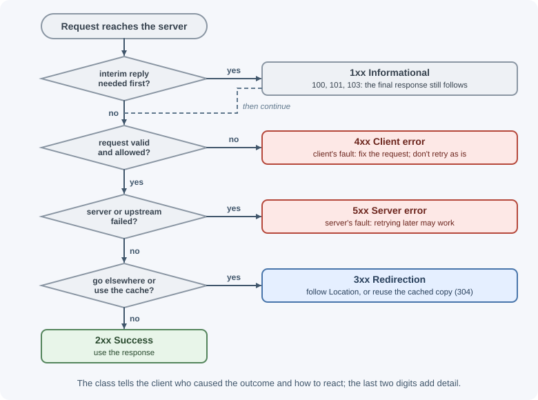
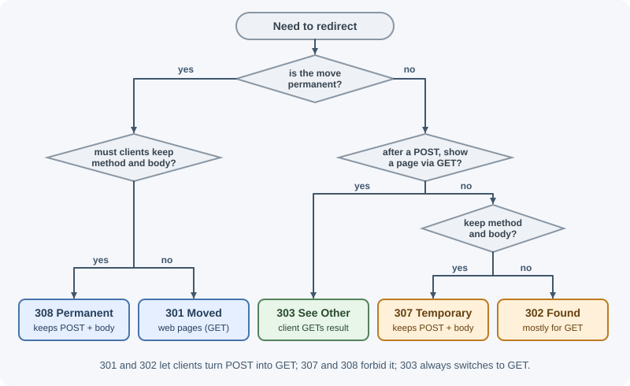
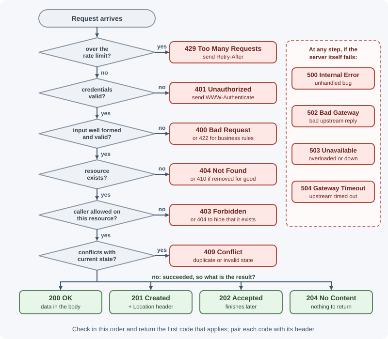

HTTP Status Codes¶
Every HTTP response starts with a three-digit status code that summarizes the outcome: success, redirect, client mistake, or server failure. Clients, browsers, caches, monitoring tools, and retry logic all make decisions based on this number, so choosing the right code is part of designing an API.
Why it matters¶
- Clients branch on it. Frontend code, mobile apps, and SDKs decide whether to show data, ask the user to log in, retry, or display an error based on the status code.
- Infrastructure acts on it. Browsers follow
3xxredirects, caches store200and revalidate with304, load balancers mark instances unhealthy on5xx, and retry libraries retry503but not400. - Monitoring depends on it. Error-rate dashboards and alerts count
5xxresponses. Returning200for failures hides outages. - It is the first debugging clue.
401points to authentication,403to permissions,502to a proxy that could not reach your app.
Real-world usage¶
- GitHub returns
404instead of403for private resources. Its REST API troubleshooting guide says an unauthenticated request for a private resource gets404 Not Found"instead of a 403 Forbidden response to avoid confirming the existence of private repositories". The same guide says requests that cannot be processed may get422 Unprocessable Entitywith a "Validation Failed" message and anerrorsproperty. - GitHub signals rate limits with
403or429. When you exceed the primary rate limit, you receive a 403 or 429 response andx-ratelimit-remainingis0; clients should wait until the time inx-ratelimit-reset. - Stripe documents a status code summary and gives
402a meaning. Stripe's error reference uses402 Request Failedfor "the parameters were valid but the request failed",409 Conflictfor a request that conflicts with another (such as reusing an idempotency key),424for a failure in a dependency outside Stripe, and429with a recommendation to use exponential backoff. It lists a failed charge or a declined card among its4xxerrors. - Proxies and CDNs add their own codes. Cloudflare returns non-standard
52xcodes such as521(web server is down) and524(a timeout occurred). Seeing one tells you the CDN, not your application, produced the response.
How it works¶
The five classes¶
The first digit defines the class. The other two digits refine it.
| Class | Meaning | Who is "at fault" | Typical client reaction |
|---|---|---|---|
1xx Informational |
Interim response; the final response follows | Nobody | Keep waiting |
2xx Successful |
The request was received, understood, and accepted | Nobody | Use the response |
3xx Redirection |
The client must take another step, usually follow a new URL | Nobody | Follow Location or use the cache |
4xx Client error |
The request is wrong or not allowed | The client | Fix the request; usually do not retry as-is |
5xx Server error |
The server failed to handle a valid request | The server | Maybe retry later |

A client that receives a code it does not recognize treats it as the x00
code of its class. An unknown 479 is handled like 400, and an unknown
531 like 500. That rule is why inventing private codes is pointless:
clients will not know what they mean.
The text after the number (the reason phrase, such as Not Found) is only
for humans. HTTP/2 and HTTP/3 do not even send it. Clients must rely on the
number.
HTTP/1.1 404 Not Found
^^^^^^^^ ^^^ ^^^^^^^^^
version code reason phrase (informational only)
In Express you set the code with res.status(code) before sending, or send
it alone with res.sendStatus(code), which uses the reason phrase as the
body. See the response object.
1xx: Informational¶
Interim responses sent before the final one. Application code rarely sends them directly; servers and proxies handle them.
100 Continue¶
- Meaning: "Your headers look fine; go ahead and send the body."
- When: a client about to upload a large body sends
Expect: 100-continueand waits. The server answers100to proceed, or a final error (such as401or413) so the client does not waste bandwidth uploading. - Example: a 2 GB upload is rejected with
413before any of it is sent. - Related headers:
Expect(request).
101 Switching Protocols¶
- Meaning: the server agrees to switch to the protocol named in the
client's
Upgradeheader. - When: opening a WebSocket. The client sends
Upgrade: websocket, and the server replies101; after that the connection speaks WebSocket, not HTTP. See real-time communication. - Related headers:
Upgrade,Connection: Upgrade.
103 Early Hints¶
- Meaning: "While I prepare the real response, start loading these."
- When: a server or CDN sends
Linkheaders for critical CSS or fonts early, so the browser can preload them while the page is still being generated. - Related headers:
Link: </app.css>; rel=preload; as=style.
2xx: Successful¶
200 OK¶
- Meaning: the request succeeded. The body depends on the method: the
resource for
GET, the result of the action forPOST, the updated resource forPATCH/PUT. - When: the default for a successful read or an update that returns data.
- Example:
GET /api/orders/42returns the order as JSON. - Express:
res.json(order)(200 is the default).
201 Created¶
- Meaning: a new resource was created.
- When: after
POSTto a collection, orPUTto a URL that did not exist yet. - Example:
POST /api/orderscreates orderord_901. - Related headers:
Locationshould point to the new resource. The body usually contains it so the client does not need another request. - Express:
res.status(201).location(/api/orders/${order.id}).json(order)
202 Accepted¶
- Meaning: the request was accepted for processing, but the work is not finished (and might still fail).
- When: long-running or queued work: video encoding, report generation, bulk imports, sending a large email campaign.
- Example:
POST /api/reportsreturns202with a link to check status. - Related headers:
Location(or a body field) pointing to a status resource such as/api/reports/jobs/77. - Express:
res.status(202).location(/api/jobs/${job.id}).json({ jobId: job.id, status: "queued" })
203 Non-Authoritative Information¶
- Meaning: the request succeeded, but a transforming proxy modified the content from what the origin sent. Rarely used; your API should not send it.
204 No Content¶
- Meaning: success, and there is intentionally no body.
- When:
DELETEsucceeded;PUT/PATCHsucceeded and you choose not to return the resource; a "fire and forget" action such as marking a notification as read. - Rules: a
204response cannot have a body. Do not send JSON with it. - Express:
res.sendStatus(204)orres.status(204).end().
206 Partial Content¶
- Meaning: the response contains only the byte range(s) the client asked for.
- When: resuming a download, video players seeking within a file, parallel downloads.
- Related headers: request
Range: bytes=0-1048575; responseContent-Range: bytes 0-1048575/52428800andAccept-Ranges: bytes. - Express:
res.sendFile()andexpress.statichandle range requests for you.
3xx: Redirection¶
The key differences between redirect codes are permanent vs temporary and whether the method and body are preserved.
| Code | Permanent? | Method preserved? | Typical use |
|---|---|---|---|
301 |
Yes | Not guaranteed (clients may change POST to GET) |
Old URL moved forever (pages, GET) |
302 |
No | Not guaranteed | Temporary redirect, mostly for GET |
303 |
No | No: becomes GET (or HEAD) |
After a form POST, send the user to a result page |
307 |
No | Yes | Temporary redirect that must keep POST and body |
308 |
Yes | Yes | Permanent move of an API endpoint that receives POST |

300 Multiple Choices¶
- Meaning: several representations are available and the client may choose. Rarely used in practice.
301 Moved Permanently¶
- Meaning: the resource has a new permanent URL.
- When: a page or domain moved for good (
http://tohttps://,/blog/old-slugto/blog/new-slug). Search engines transfer ranking to the new URL, and browsers cache the redirect. - Related headers:
Location. - Caution: for historical reasons clients may change a
POSTinto aGETwhen following it. Use308when the method must be kept. Because browsers cache301aggressively, a mistaken301is hard to undo. - Express:
res.redirect(301, "https://new.example.com/path")
302 Found¶
- Meaning: the resource is temporarily at another URL; keep using the original URL in future.
- When: temporary redirects of
GETrequests, such as sending a logged-out user to/login. - Related headers:
Location. - Caution: like
301, clients may switchPOSTtoGET. Use303or307to be explicit. - Express:
res.redirect("/login")sends302by default.
303 See Other¶
- Meaning: "The result is at another URL; fetch it with
GET." - When: the Post/Redirect/Get pattern: after a form
POSTcreates an order, redirect to/orders/901so refreshing the page does not resubmit the form. - Related headers:
Location. - Express:
res.redirect(303,/orders/${order.id})
304 Not Modified¶
- Meaning: "The copy you already have is still current; use it."
- When: answering a conditional
GETwhoseIf-None-Matchmatches the currentETag, or whoseIf-Modified-Sinceis not older than the last change. - Rules: no body. The client reuses its cached copy, which saves bandwidth and time.
- Related headers: request
If-None-Match,If-Modified-Since; responseETag,Cache-Control,Last-Modified. - Express: sends
304automatically forres.send()/res.json()when the generatedETagmatches. See HTTP headers.
307 Temporary Redirect¶
- Meaning: temporary redirect that must keep the original method and body.
- When: temporarily routing a
POST /api/uploadto another server during maintenance; HSTS upgrades in browsers appear as an internal307. - Related headers:
Location. - Express:
res.redirect(307, "https://backup.example.com/api/upload")
308 Permanent Redirect¶
- Meaning: permanent redirect that must keep the method and body.
- When: an API endpoint moved permanently and clients still
POSTorPUTto the old URL. - Related headers:
Location. - Express:
res.redirect(308, "/api/v2/orders")
4xx: Client errors¶
The request has a problem the client must fix. Retrying the same request
unchanged will normally fail again (exceptions: 408, 425, 429). Include
a body that explains what went wrong, ideally in one consistent format such
as RFC 9457 problem details.
400 Bad Request¶
- Meaning: the server cannot or will not process the request because of a client error: malformed syntax, invalid framing, or invalid input.
- When: malformed JSON, a missing required field, a wrong type
(
"quantity": "lots"), an invalid query parameter. Many APIs use400for all validation errors. - Example:
POST /api/orderswith body{"quantity": -3}. - Express:
res.status(400).json({ title: "Invalid request", errors: [{ field: "quantity", message: "must be at least 1" }] }) - Note: Express's JSON parser produces a
400automatically for malformed JSON. See body parsing.
401 Unauthorized¶
- Meaning: despite the name, it means unauthenticated: no valid credentials were provided. "Who are you?"
- When: missing token, expired token, invalid signature, no session cookie.
- Related headers: the response must include
WWW-Authenticatedescribing how to authenticate, for exampleWWW-Authenticate: Bearer realm="api", error="invalid_token". - Client reaction: refresh the token or send the user to log in.
- Express:
res.status(401).set("WWW-Authenticate", 'Bearer realm="api"').json({ title: "Authentication required" })
402 Payment Required¶
- Meaning: reserved by the HTTP specification for future use, with no standard semantics.
- When: some APIs use it when a subscription has lapsed or a quota needs payment. If you use it, document it clearly.
403 Forbidden¶
- Meaning: the server understood the request and knows who the caller is (or does not need to), but refuses it. "I know who you are; you can't do this."
- When: a regular user calls an admin endpoint; a user tries to edit another user's document; an IP is blocked; a CSRF token check fails.
- Client reaction: do not retry with the same credentials; logging in again will not help.
- Express:
res.status(403).json({ title: "You do not have permission to delete this project" })
404 Not Found¶
- Meaning: the server has no current representation for the target URL, or will not reveal that one exists.
- When: unknown route, or
GET /api/orders/999where order 999 does not exist. - Also used: instead of
403to avoid revealing that a private resource exists (see "403 vs 404" below). - Express:
return res.status(404).json({ title: "Order not found" }), and a final catch-all handler for unknown routes.
405 Method Not Allowed¶
- Meaning: the resource exists but does not support this method.
- When:
DELETE /api/orderson a collection that cannot be deleted. - Related headers: the response must include
Allow, for exampleAllow: GET, POST. - Express:
res.set("Allow", "GET, POST").sendStatus(405)
406 Not Acceptable¶
- Meaning: the server cannot produce a representation matching the
client's
Acceptheaders. - When: the client sends
Accept: application/xmlto a JSON-only API. Many APIs ignoreAcceptand return JSON anyway, which is allowed. - Express:
res.format()sends406when nothing matches. See HTTP headers.
407 Proxy Authentication Required¶
- Meaning: like
401, but the client must authenticate with a proxy between it and the server. Comes withProxy-Authenticate. Your API will not send it.
408 Request Timeout¶
- Meaning: the server gave up waiting for the client to finish sending the request.
- When: a client opened a connection but sent headers or the body too slowly. Usually sent by the server or proxy, not application code.
- Related headers: typically
Connection: close. Clients may retry. - Node.js: controlled by
server.requestTimeoutandserver.headersTimeout. See the http module.
409 Conflict¶
- Meaning: the request conflicts with the current state of the resource.
- When: creating a user whose email already exists; updating a record that someone else changed (version mismatch); trying to cancel an order that has already shipped.
- Body: explain the conflict so the client can resolve it.
- Express:
res.status(409).json({ title: "Email already registered" })
410 Gone¶
- Meaning: the resource existed but has been removed permanently, and no forwarding address is known.
- When: a deleted promotion page, a retired API version, a deliberately
expired share link. Unlike
404, it tells clients and search engines to stop asking. - Express:
res.status(410).json({ title: "API v1 was retired. Use /api/v2." })
411 Length Required¶
- Meaning: the server refuses a request body without a
Content-Lengthheader. Rare with modern clients and chunked transfer.
412 Precondition Failed¶
- Meaning: a condition in the request headers evaluated to false.
- When: optimistic concurrency. The client sends
If-Match: "v7"with aPUT, but the resource is now at"v8"because someone else edited it. The update is rejected instead of silently overwriting their change. - Related headers:
If-Match,If-Unmodified-Since,ETag. - Express:
if (req.get("If-Match") !== currentEtag) return res.sendStatus(412); - See concurrency and race conditions.
413 Content Too Large¶
- Meaning: the request body is larger than the server will accept. (Older name: Payload Too Large.)
- When: an upload over the size limit, a JSON body over the parser limit.
- Related headers:
Retry-Afterif the condition is temporary. - Express:
express.json({ limit: "100kb" })produces413for larger bodies automatically.
414 URI Too Long¶
- Meaning: the URL is longer than the server will process.
- When: a client stuffs huge filters or data into the query string. The
fix is usually to move the data into a
POSTbody.
415 Unsupported Media Type¶
- Meaning: the server will not accept the body's format.
- When: the client sends
Content-Type: text/xmlto a JSON endpoint, or sends aPATCHin a patch format you do not support. - Related headers:
Accept-Patch(forPATCH) or a description of accepted types in the body;Accept-Encodingif the problem is the content encoding. - Express:
if (!req.is("application/json")) return res.sendStatus(415);
416 Range Not Satisfiable¶
- Meaning: the requested byte range is outside the resource.
- When:
Range: bytes=900000-on a 500 KB file. - Related headers:
Content-Range: bytes */512000tells the client the real size.
417 Expectation Failed¶
- Meaning: the server cannot meet the request's
Expectheader (for example an unsupportedExpectvalue). Rare.
418 I'm a teapot¶
- Meaning: an April Fools' joke from RFC 2324 (the "Hyper Text Coffee Pot Control Protocol"). RFC 9110 lists it as "(Unused)" and reserves it in the IANA registry, so it cannot currently be assigned to anything else. Some sites return it for fun or to brush off bots. Never use it in a real API.
421 Misdirected Request¶
- Meaning: the request reached a server that is not configured to answer for that host. Happens with HTTP/2 connection reuse across host names sharing a certificate. Infrastructure-level; clients retry on a new connection.
422 Unprocessable Content¶
- Meaning: the body is syntactically correct (valid JSON, correct content type) but semantically invalid, so the server cannot process it. (Older name: Unprocessable Entity.)
- When: valid JSON whose values break business rules: an end date before the start date, a referenced product that does not exist, a password that fails the policy.
- Express:
res.status(422).json({ title: "Validation failed", errors: [{ field: "endDate", message: "must be after startDate" }] }) - See "400 vs 422" below.
423 Locked¶
- Meaning: the resource is locked. From WebDAV.
- When: a document is checked out by another user in a collaborative editor that uses explicit locks.
424 Failed Dependency¶
- Meaning: the request failed because a previous request it depended on failed. From WebDAV; uncommon in general APIs.
425 Too Early¶
- Meaning: the server will not risk processing a request sent as TLS 1.3 early data (0-RTT), because early data can be replayed. The client retries after the handshake completes. Infrastructure-level.
426 Upgrade Required¶
- Meaning: the server refuses the request with the current protocol, but would accept it after the client upgrades.
- Related headers:
Upgradelists the required protocol(s).
428 Precondition Required¶
- Meaning: the server requires the request to be conditional.
- When: an API that refuses
PUT/PATCH/DELETEwithoutIf-Match, to prevent "lost update" problems where two clients overwrite each other. - Express:
if (!req.get("If-Match")) return res.sendStatus(428);
429 Too Many Requests¶
- Meaning: the client sent too many requests in a given time (rate limiting).
- When: a user exceeds 100 requests per minute; too many login attempts.
- Related headers:
Retry-Aftertells the client how long to wait (in seconds or as a date). Many APIs also send rate-limit headers showing the limit, remaining requests, and reset time. - Client reaction: wait and retry with backoff.
- Express:
res.status(429).set("Retry-After", "30").json({ title: "Too many requests" }) - See rate limiting and throttling.
431 Request Header Fields Too Large¶
- Meaning: the headers (all together, or one of them) are too large.
- When: a client sends a huge cookie jar or a giant token. Node.js
rejects headers over its limit (16 KB by default) with
431. - Fix: shrink cookies and tokens rather than raising the limit.
451 Unavailable For Legal Reasons¶
- Meaning: the server is legally required to deny access, for example because of a court order or sanctions.
- Related headers: a
Linkheader withrel="blocked-by"can identify who requires the block. The number refers to the novel Fahrenheit 451.
5xx: Server errors¶
The server failed to fulfill an apparently valid request. These count against your error rate and should trigger investigation. Never put stack traces or internal details in the response body.
500 Internal Server Error¶
- Meaning: a generic, unexpected failure on the server.
- When: an unhandled exception, a bug, a failed dependency you did not map to a more specific code.
- Body: a generic message plus a request ID for support, never the stack trace.
- Express: the default error handler sends
500for errors without a status. See error handling in Express.
501 Not Implemented¶
- Meaning: the server does not support the functionality needed, such as a method it does not recognize at all.
- When: a client sends a method your server does not implement for any resource. Some APIs use it for planned endpoints that do not exist yet.
- Compare:
405means the method is known but not allowed on this resource.
502 Bad Gateway¶
- Meaning: a server acting as a gateway or proxy received an invalid response from the upstream server.
- When: Nginx or a load balancer forwards to your app, and your app has crashed, closed the connection, or returned garbage. Also when your own backend calls another service that fails, and you choose to report it.
- Debugging: check whether the app process is running and whether keep-alive timeouts are mismatched. See the request lifecycle.
503 Service Unavailable¶
- Meaning: the server is temporarily unable to handle the request: overloaded, in maintenance, or has no healthy instances.
- When: planned maintenance, shedding load during a spike, a readiness check failing during startup or shutdown, a required dependency (the database) being down.
- Related headers:
Retry-Afterwith seconds or a date. - Express:
res.status(503).set("Retry-After", "120").json({ title: "Down for maintenance" })
504 Gateway Timeout¶
- Meaning: a gateway or proxy did not get a response from the upstream server in time.
- When: your handler takes 90 seconds and the load balancer's timeout is
- Or your app calls a payment API that does not answer within your timeout.
- Fix: speed up the slow work, move it to a background job (
202), or adjust timeouts consistently.
505 HTTP Version Not Supported¶
- Meaning: the server does not support the HTTP version used in the request. Rare.
507 Insufficient Storage¶
- Meaning: the server cannot store what is needed to complete the request. From WebDAV. Some storage APIs use it when a disk or quota is full.
508 Loop Detected¶
- Meaning: the server detected an infinite loop while processing the request. From WebDAV; rare elsewhere.
511 Network Authentication Required¶
- Meaning: the client must authenticate to gain network access. Sent by captive portals (hotel or airport Wi-Fi login pages), not by origin servers.
When to use and when not to use¶
Use a specific standard code when:
- Clients need to react differently:
401(log in again) versus403(show "access denied") versus429(wait and retry). - A companion header carries the details:
Locationwith201,Allowwith405,Retry-Afterwith429and503. - Monitoring must separate client mistakes (
4xx) from server faults (5xx).
Fall back to the class's general code (400, 500) when no specific
code fits; clients already treat unknown codes that way.
Do not:
- Return
200with an error in the body (except where the protocol defines it, such as GraphQL execution errors). - Invent private codes such as
299or461; clients cannot know them. - Use WebDAV or infrastructure codes (
423,425,508) in a JSON API without a strong reason and clear documentation.
| Approach | Clients can branch on it | Monitoring sees failures | Caches and proxies behave correctly | Verdict |
|---|---|---|---|---|
| Precise standard code + error body | Yes | Yes | Yes | Use this |
Generic 400/500 for everything |
Partly | Partly | Yes | Acceptable fallback |
200 + {"success": false} |
Only by parsing the body | No | No (errors may be cached) | Avoid |
| Private non-standard codes | No (treated as x00) |
Partly | Unpredictable | Avoid |
Practical examples¶
Choosing codes in one Express resource¶
import express from "express";
const app = express();
app.use(express.json({ limit: "100kb" })); // larger bodies -> 413 automatically
const users = new Map([["1", { id: "1", email: "ana@example.com", version: 1 }]]);
app.post("/api/users", (req, res) => {
const { email } = req.body ?? {};
if (typeof email !== "string") {
return res.status(400).json({ title: "email is required" }); // malformed input
}
if (!email.includes("@")) {
return res.status(422).json({ title: "email is not valid" }); // semantic problem
}
if ([...users.values()].some((u) => u.email === email)) {
return res.status(409).json({ title: "email already registered" }); // state conflict
}
const user = { id: String(users.size + 1), email, version: 1 };
users.set(user.id, user);
res.status(201).location(`/api/users/${user.id}`).json(user);
});
app.get("/api/users/:id", (req, res) => {
const user = users.get(req.params.id);
if (!user) return res.status(404).json({ title: "user not found" });
res.set("ETag", `"${user.version}"`).json(user); // clients send this back in If-Match
});
app.put("/api/users/:id", (req, res) => {
const user = users.get(req.params.id);
if (!user) return res.status(404).json({ title: "user not found" });
const ifMatch = req.get("If-Match");
if (!ifMatch) return res.sendStatus(428); // require conditional updates
if (ifMatch !== `"${user.version}"`) return res.sendStatus(412); // stale version
Object.assign(user, { email: req.body.email, version: user.version + 1 });
res.set("ETag", `"${user.version}"`).json(user);
});
app.delete("/api/users/:id", (req, res) => {
users.delete(req.params.id);
res.sendStatus(204);
});
// Unknown routes
app.use((req, res) => res.status(404).json({ title: "route not found" }));
// Unexpected errors
app.use((err, req, res, next) => {
console.error(err);
res.status(err.status ?? 500).json({ title: "Something went wrong" });
});
app.listen(3000);
Checking codes with curl¶
curl -i http://localhost:3000/api/users/99 # 404
curl -i -X POST http://localhost:3000/api/users \
-H "Content-Type: application/json" -d '{bad json' # 400 from the parser
curl -i -X PUT http://localhost:3000/api/users/1 \
-H "Content-Type: application/json" -d '{"email":"x@y.z"}' # 428
Best practices¶
Decision guide: which code should my endpoint return?¶

| Situation | Code |
|---|---|
| Read succeeded | 200 |
| Created a resource | 201 + Location |
| Accepted work that will finish later | 202 + status URL |
| Succeeded, nothing to return (delete, update without body) | 204 |
| Client's cached copy is still valid | 304 |
Resource moved permanently (GET pages) |
301 |
| Resource moved permanently, method must be kept | 308 |
Redirect after a form POST to a result page |
303 |
| Temporary redirect, method must be kept | 307 |
| Malformed JSON, missing or wrongly typed field | 400 |
| Valid JSON that breaks business rules (if you separate it) | 422 |
| No credentials, or invalid/expired credentials | 401 + WWW-Authenticate |
| Authenticated but not allowed | 403 (or 404 to hide existence) |
| Resource or route does not exist | 404 |
| Resource removed permanently | 410 |
| Method not supported on this resource | 405 + Allow |
| Duplicate, or the resource's state forbids the action | 409 |
If-Match / If-Unmodified-Since did not match |
412 |
| Conditional request required but missing | 428 |
| Body too large | 413 |
Wrong Content-Type |
415 |
| Rate limit exceeded | 429 + Retry-After |
| Unexpected exception | 500 |
| Upstream service returned an invalid response | 502 |
| Overloaded, maintenance, dependency down | 503 + Retry-After |
| Upstream service timed out | 504 |
General rules¶
- Use the most specific code that is correct, and fall back to the
class's
x00code when nothing fits. - Always send a useful body for errors in one consistent format (see API design best practices), but never leak stack traces, SQL, or internal hostnames.
- Pair codes with their headers:
201withLocation,401withWWW-Authenticate,405withAllow,429/503withRetry-After. - Document every code each endpoint can return in your API reference.
- Keep
5xxfor real server faults. A user's invalid input is a4xx; if it shows up as500, your monitoring will cry wolf.
Confusing pairs explained¶
401 vs 403¶
401: "I don't know who you are" (missing, invalid, or expired credentials). Logging in or refreshing a token can fix it.403: "I know who you are, and the answer is no." Logging in again does not help.
A frontend typically redirects to login on 401 and shows "access denied"
on 403.
400 vs 422¶
400: the request itself is broken: malformed JSON, wrong types, missing required fields.422: the request is well formed, but the values make no sense for the business rules.
Both are acceptable for validation errors. Many APIs use 400 for all of
them; others use 422 for semantic validation. Pick one convention and
apply it everywhere.
404 vs 410¶
404: not found, with no statement about the future. It may exist later.410: it existed and is gone for good. Caches and search engines can stop asking.
403 vs 404 for hiding resources¶
If a user requests /api/projects/secret-merger and is not a member,
returning 403 confirms the project exists. When existence itself is
sensitive, return 404, the same response as for a project that truly does
not exist. GitHub does this for private repositories.
301 vs 308¶
Both are permanent. 301 allows clients to change POST to GET; 308
forbids it. Use 301 for web pages and 308 for API endpoints that receive
POST, PUT, or PATCH.
302 vs 303 vs 307¶
All are temporary. 302 is ambiguous about the method (browsers turn POST
into GET). 303 says "use GET on the new URL" (perfect after form
submissions). 307 says "repeat the same method and body at the new URL".
500 vs 502 vs 503 vs 504¶
| Code | Produced by | Means |
|---|---|---|
500 |
Your application | Your code failed unexpectedly |
502 |
A proxy or gateway | The upstream answered badly or hung up |
503 |
A proxy or the app | Temporarily unable to serve (overload, maintenance, no healthy instances) |
504 |
A proxy or gateway | The upstream did not answer in time |
The 200-with-error-body anti-pattern¶
HTTP/1.1 200 OK
Content-Type: application/json
{"success": false, "error": "User not found"}
This breaks caching (the error may be cached as a success), monitoring (no
errors appear on dashboards), retry logic, and every client that checks
response.ok. Return the real status code with the error body instead. (A
documented exception is GraphQL, covered in
API styles.)
204 vs 200 with an empty body¶
204 explicitly says "there is no body". 200 with an empty body is legal
but confuses clients that try to parse JSON from every 200. If there is
nothing to return, use 204; if the client needs data, return 200 with
the data.
Quick reference table¶
| Code | Name | One-line meaning |
|---|---|---|
| 100 | Continue | Send the body |
| 101 | Switching Protocols | Upgrading (e.g. to WebSocket) |
| 103 | Early Hints | Preload these while you wait |
| 200 | OK | Success |
| 201 | Created | New resource created (Location) |
| 202 | Accepted | Queued; will finish later |
| 203 | Non-Authoritative Information | Modified by a proxy |
| 204 | No Content | Success, no body |
| 206 | Partial Content | Requested byte range |
| 300 | Multiple Choices | Several options available |
| 301 | Moved Permanently | New permanent URL (method may change) |
| 302 | Found | Temporary URL (method may change) |
| 303 | See Other | Go GET the result elsewhere |
| 304 | Not Modified | Your cached copy is fine |
| 307 | Temporary Redirect | Temporary, same method and body |
| 308 | Permanent Redirect | Permanent, same method and body |
| 400 | Bad Request | Malformed or invalid request |
| 401 | Unauthorized | Not authenticated (WWW-Authenticate) |
| 402 | Payment Required | Reserved; sometimes billing |
| 403 | Forbidden | Authenticated but not allowed |
| 404 | Not Found | No such resource |
| 405 | Method Not Allowed | Wrong method (Allow) |
| 406 | Not Acceptable | Cannot satisfy Accept |
| 407 | Proxy Authentication Required | Authenticate with the proxy |
| 408 | Request Timeout | Client too slow to send |
| 409 | Conflict | Conflicts with current state |
| 410 | Gone | Permanently removed |
| 411 | Length Required | Content-Length needed |
| 412 | Precondition Failed | If-Match etc. failed |
| 413 | Content Too Large | Body too big |
| 414 | URI Too Long | URL too long |
| 415 | Unsupported Media Type | Wrong Content-Type |
| 416 | Range Not Satisfiable | Bad byte range |
| 417 | Expectation Failed | Cannot meet Expect |
| 418 | I'm a teapot | Joke code; reserved |
| 421 | Misdirected Request | Wrong server for this host |
| 422 | Unprocessable Content | Well formed but semantically invalid |
| 423 | Locked | Resource locked |
| 424 | Failed Dependency | A required earlier request failed |
| 425 | Too Early | Won't process replayable early data |
| 426 | Upgrade Required | Switch protocols first |
| 428 | Precondition Required | Send a conditional request |
| 429 | Too Many Requests | Rate limited (Retry-After) |
| 431 | Request Header Fields Too Large | Headers too big |
| 451 | Unavailable For Legal Reasons | Blocked for legal reasons |
| 500 | Internal Server Error | Unexpected server failure |
| 501 | Not Implemented | Functionality not supported |
| 502 | Bad Gateway | Upstream gave an invalid response |
| 503 | Service Unavailable | Temporarily unavailable (Retry-After) |
| 504 | Gateway Timeout | Upstream did not answer in time |
| 505 | HTTP Version Not Supported | Unsupported HTTP version |
| 507 | Insufficient Storage | No space to complete |
| 508 | Loop Detected | Infinite loop detected |
| 511 | Network Authentication Required | Captive portal login |
In production¶
- An outage that dashboards do not show.
Symptom: users report failures, but the
5xxrate is flat. Detect: sample response bodies or client error reports show{"success": false}with status200. Cause: the 200-with-error anti-pattern. Fix: return real4xx/5xxcodes and alert on them. - Alerts firing for bad input.
Symptom: the
5xxalert fires every day, nobody can find an outage. Detect:500responses whose logged errors are validation, parse, or "not found" errors. Cause: unmapped client errors fall through to the default500. Fix: map validation to400/422, missing records to404, conflicts to409, and keep5xxfor real faults. - Clients hammering the API after a
4xx. Symptom: traffic spikes made of identical failing requests. Detect: access logs show one client repeating a request that gets400or401many times per second. Cause: retry logic that retries every error. Fix: retry only transient failures such as408,429,502,503, and504(honoringRetry-After), with exponential backoff, as Stripe recommends for its429responses. - A redirect you cannot take back.
Symptom: after reverting a
301, some users still land on the new URL. Detect: traffic keeps arriving at the redirect target from browsers that never request the old URL again. Cause: browsers cached the permanent redirect. Fix: test with302or307first, and only switch to301/308once the move is final. - Some users cannot load anything:
431. Symptom: only certain users get errors, often long-time users. Detect:431 Request Header Fields Too Largein server or proxy logs for those users. Cause: oversized cookies or tokens. Fix: remove stale cookies, keep tokens small, and set cookies on the narrowest domain and path.
Important terminology¶
- Status code: the three-digit number summarizing a response.
- Reason phrase: the human-readable text after the code; ignored by clients and absent in HTTP/2 and HTTP/3.
- Status class: the group given by the first digit (
1xxto5xx). - Redirect: a
3xxresponse telling the client to look elsewhere, viaLocation. - Conditional request: a request with
If-*headers that the server evaluates before acting (304,412). - Upstream: the server a proxy forwards to; the source of
502/504. - Rate limiting: restricting how many requests a client may send in a
time window (
429).
Common mistakes and misconceptions¶
- Returning
200for errors with{"success": false}in the body. - Using
401for permission problems.401is about identity; use403for permissions. - Returning
500for invalid input, which pollutes error dashboards and hides real outages. - Sending a body with
204or304. Both must not have one. - Forgetting the companion header:
Locationon201,Allowon405,WWW-Authenticateon401,Retry-Afteron429/503. - Using
301for an API endpoint that receivesPOST, which some clients turn into aGET. Use308. - Inventing custom codes such as
299or499in a public API. Clients treat them as200and400. (499appears in Nginx logs when the client closed the connection, but it is not a standard code and is never sent to clients.) - Leaking stack traces in
500responses.
Revision questions¶
- What does a client do with an unknown status code such as
437? - Explain the difference between
401and403with an example of each. - A user submits a form with
POST. Which redirect code should send them to the result page, and why not302? - When would you return
404instead of403for a resource the user is not allowed to see? - Which component usually produces
502and504, and what does each one tell you? - Which headers belong with
201,401,405, and429?
Further learning¶
- MDN: HTTP response status codes has a page for every code with examples.
- RFC 9110: Section 15, Status Codes is the authoritative definition of the standard codes.
- RFC 6585: Additional HTTP Status Codes
defines
428,429,431, and511. - RFC 9457: Problem Details for HTTP APIs defines a standard error body format.